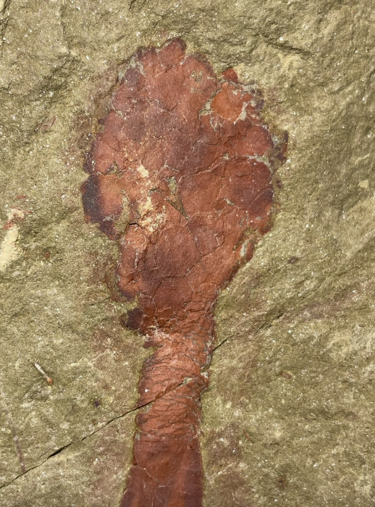
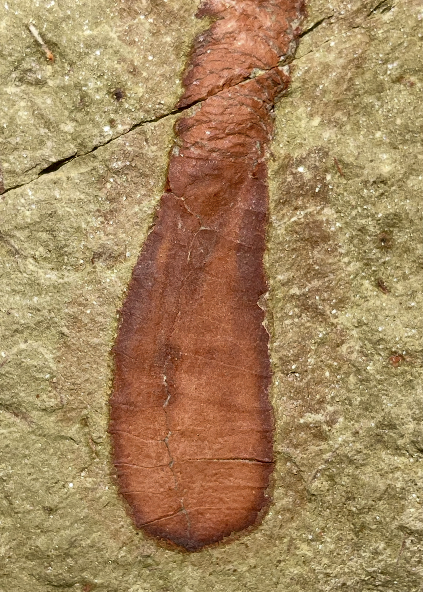
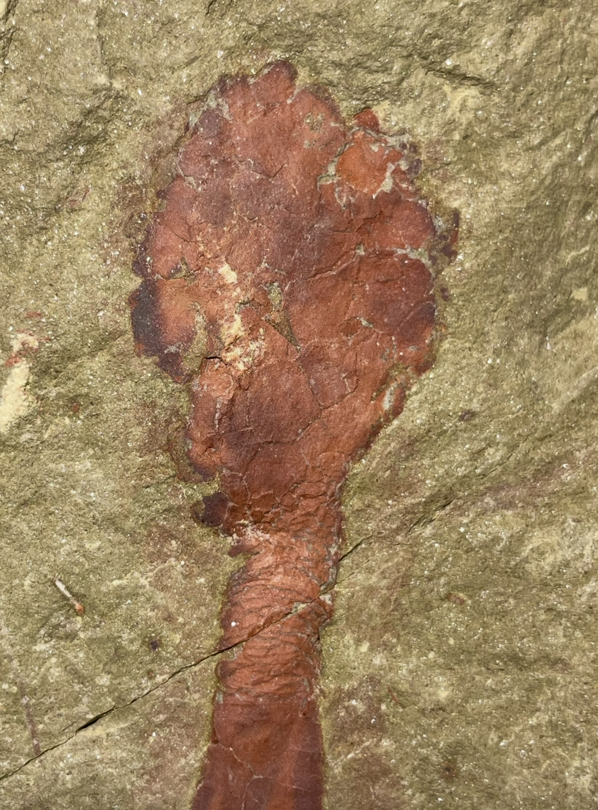
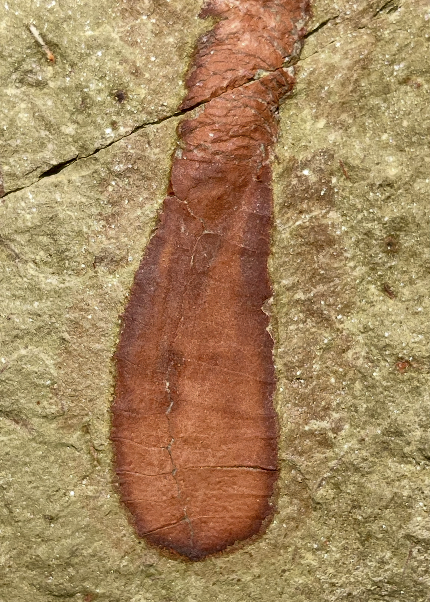

Carpoid
Plasiacystis sp.
• Ordovician
• Fezouata Formation
• Zagora, Morocco
Size: 7 cm
Plasiacystis is a bizzare taxon even among the solutan carpoids, whose dististele has been modified into a wide, "beaver-tail"-like paddle thought to aid in locomotion for a mobile lifestyle. Plasiacystis mobilis is the only definitively recognized species from the Czech Republic and Morocco, but this specimen resembles Plasiacystis sp. (which may be a different species or ontogenic variant). Namely, it possesses a proportionately longer, straigher dististele that expands more widely and lacks any ornamentation or processes, in addition to being significantly larger overall compared to typical P. mobilis which measure 5 cm on average (Dupichaud et al. 2023).
 
